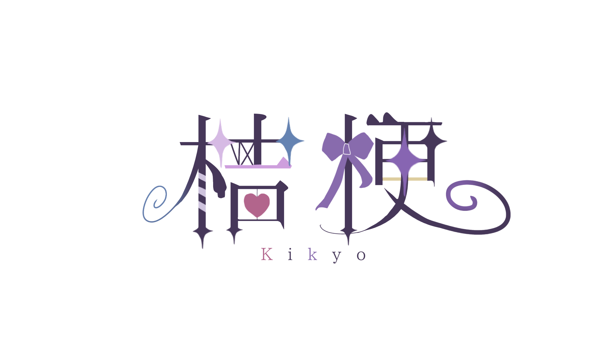
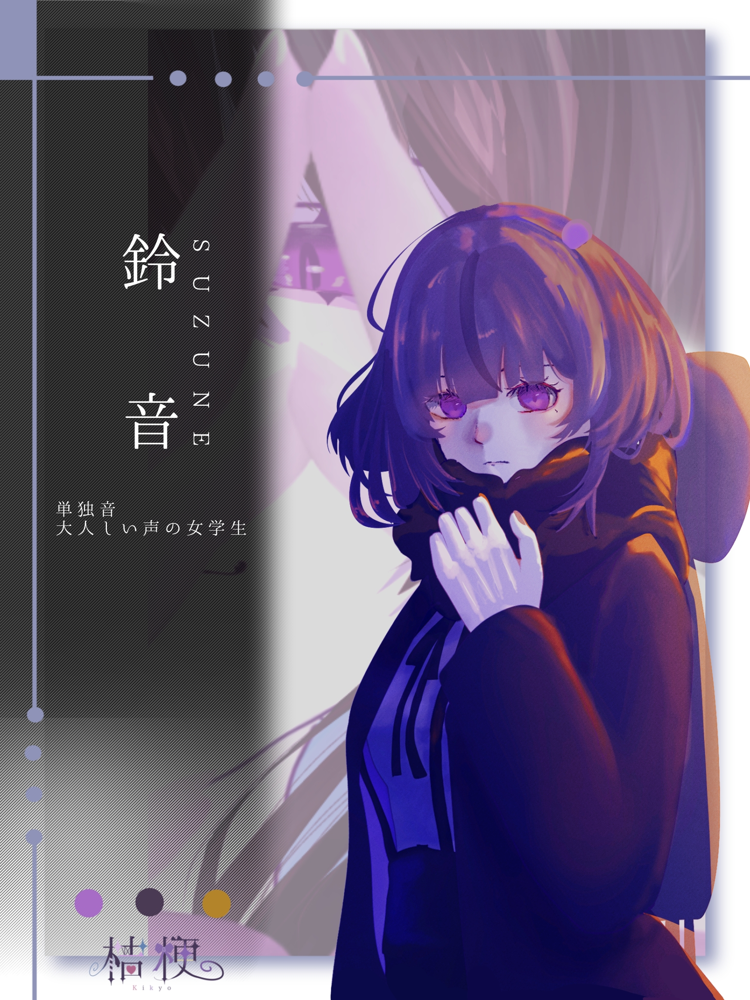

参考動画
Suzune
鈴音（すずね）は、桔梗が制作するUTAU音源のオリジナルキャラクター。 内気な大学生の女の子。愛生と共に占い屋を営んでいる。


立ち絵を5回クリックすると、話しかけてきます。
「...はじめまして。占い、していきますか？」
「私と一緒にお茶でもどうですか？いえ、私が退屈だったのであなたもそうかと思っただけです。ナンパじゃないです。怒りますよ。」
「歌ですか？嫌いではないですけど下手なので、聞かれるのは嫌です。え？一緒に練習したい？私をアイドルにでもする気ですか？...まぁ、付き合ってあげなくはないですが。」
引っ込み思案な大学生。幼い頃に助けたアンドロイド（愛生）と久々に再会し、彼女と共になぜか占い屋さんを営むことになった。今までは退屈で平凡な日々を送っていたが、愛生と出会ったことで少しずつ変わり始める。
単独音単音階
*原音のノイズが目立ちます。将来的には再収録すると思います。
この先には、年齢制限のある裏設定が含まれる可能性があります。
この先の内容は、18歳未満の方には適さない表現を含む可能性があります。
あなたは18歳以上ですか？
幼少期に親を亡くして、親戚の家で育てられた。迎えてくれた人達はみな優しい人達で、鈴音を歓迎してくれたが、その優しさを申し訳なく感じている。人の気持ちを勝手に推測して傷ついてしまうので、寂しがり屋なのに一人で過ごしている。
孤独を感じてしまうのが嫌なので、常に何かで頭を動かして誤魔化したいと思っている。暇になると、嫌なことばかり頭に浮かんできてしまう。
愛生は、絶対に自分を裏切らない初めてで唯一の相手だから依存してしまっている。愛生を失うとまた一人に戻ってしまうので、邪魔する可能性がある相手を敵視する。悪感情や寿命をもたないロボットだから安心して愛生を大好きでいられるが、そんな自分が少し嫌い。
将来の夢は、愛生に看取られながら穏やかに老衰すること。愛生と再会するまでは、漠然と早く死にたいと思っていたが、今は少しでも長く愛生と楽しく過ごしたいと思っている。
本来は愛生の成長した姿となるキャラクターとしてデザインしました。しかし、どうせなら二人組の方が可愛いと思い、別々の存在になっています。その名残から、二人は似たようなビジュアルをしています。
「鈴音」という名前はビジュアルからインスピレーションしました。声もシャリっとしているので、似合っていると思います。ですが、ありきたりな名前なのでせめて名字を付けるべきだったと今は感じています。今後何らかの不都合が出てきた際は、後付けで名字を付与されるかもしれません。